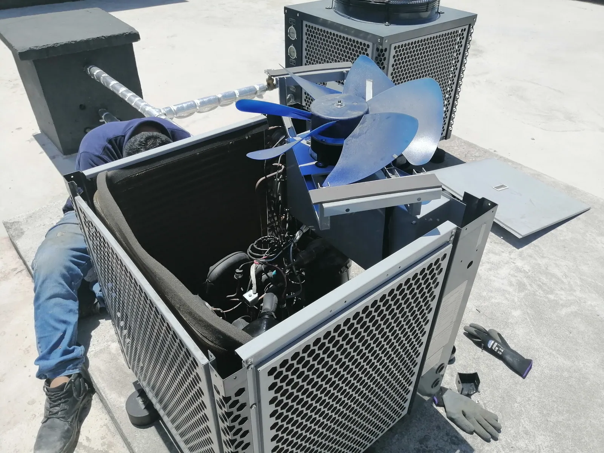
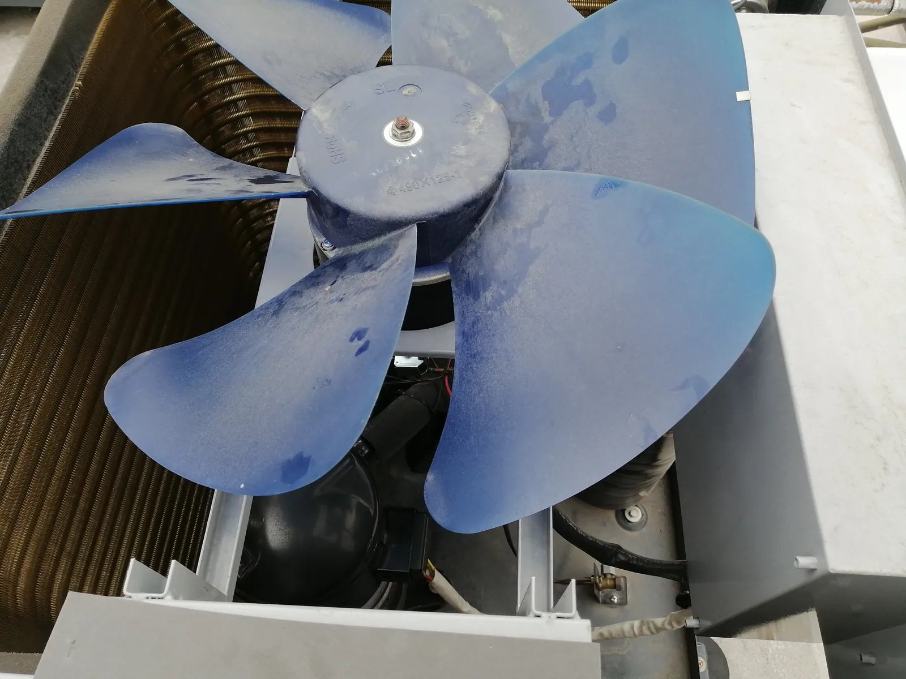

No enfría
El equipo funciona, pero el ambiente no recibe el efecto esperado. La causa requiere revisión antes de definir una intervención.
Servicio técnico de climatización en Quito
Diagnóstico, limpieza técnica y mantenimiento preventivo de equipos de aire acondicionado. Cuando la revisión confirma una falla atendible, el mantenimiento correctivo o la reparación se define según el equipo, su condición y el alcance acordado.
Puede describir el síntoma y enviar fotografías exteriores sin abrir ni intervenir el equipo.

Estos síntomas orientan la solicitud, pero no determinan por sí solos la causa. La revisión técnica debe considerar el estado y funcionamiento del equipo.
El equipo funciona, pero el ambiente no recibe el efecto esperado. La causa requiere revisión antes de definir una intervención.
Puede existir suciedad, restricción del flujo de aire, condición de operación u otra falla que debe evaluarse.
El agua visible puede relacionarse con drenaje, suciedad, formación de hielo o condiciones de instalación y uso.
La acumulación de suciedad y humedad puede influir, pero el origen debe identificarse durante la revisión.
Un cambio de sonido o vibración puede estar relacionado con elementos móviles, fijaciones o la condición general del equipo.
La formación de hielo es una señal de funcionamiento irregular y requiere una evaluación técnica.
Las interrupciones pueden tener distintas causas eléctricas, de control, protección u operación.
Un drenaje con restricción puede ocasionar acumulación o salida de agua y necesita limpieza y comprobación.
Falta de encendido, disparos o respuestas irregulares deben revisarse sin manipular conexiones ni protecciones.
Ciclos inusuales o cambios de operación requieren medición y revisión del equipo en sus condiciones reales de uso.
Estas fotografías propias corresponden a la misma intervención en una unidad exterior. Se muestran como evidencia visual limitada, sin presentarlas como trabajos diferentes ni identificar al cliente o la ubicación.

El alcance se confirma después de revisar el equipo, su condición, el acceso disponible y las tareas que pueden ejecutarse de forma segura.
Revisión planificada del estado general, limpieza aplicable y prueba de funcionamiento según el equipo y su condición.
Retiro de suciedad accesible en los elementos incluidos en el alcance, con el equipo detenido y bajo condiciones seguras.
Inspección del síntoma reportado, condición visible y respuesta del equipo para orientar la causa probable.
Revisión del estado, limpieza cuando corresponda y recomendación de atención según el tipo y condición observada.
Inspección y limpieza aplicable de superficies accesibles, sujetas al diseño y estado del equipo.
Revisión, limpieza y comprobación del recorrido accesible para atender restricciones o goteo relacionados con el desagüe.
Inspección técnica de alimentación y conexiones accesibles dentro del alcance de la revisión.
Revisión visual y funcional del ventilador y su condición durante una intervención técnica.
Comprobaciones aplicables de operación antes y después del trabajo, cuando el estado del equipo permite realizarlas.
La reparación o mantenimiento correctivo se plantea únicamente cuando el diagnóstico confirma una tarea atendible y se acuerda el alcance.
La experiencia visual disponible corresponde a una unidad de climatización con componentes interior y exterior. La aceptación de cada solicitud depende del modelo, estado, acceso y alcance técnico.
Una revisión ordenada permite delimitar el trabajo sin anticipar una reparación antes del diagnóstico.
Recibimos solicitudes de mantenimiento y revisión de climatización en:
Atendemos solicitudes en Quito y sectores de los valles, según coordinación, ubicación, acceso y alcance técnico.
Puede influir el flujo de aire, la suciedad, la operación, la condición eléctrica u otra falla. Como existen varias causas posibles, conviene revisar el equipo antes de definir el trabajo.
El goteo puede relacionarse con una restricción del drenaje, acumulación de suciedad, hielo o condiciones del equipo. No abra la unidad; solicite una revisión.
No siempre. La limpieza puede atender suciedad y humedad accesibles, pero primero debe revisarse el origen y el estado de los elementos involucrados.
Según el equipo y el alcance, se revisan filtros, superficies accesibles del evaporador y condensador, drenaje, conexiones eléctricas, ventilador exterior y funcionamiento.
La frecuencia depende del uso, ambiente, acumulación de suciedad, acceso e historial del equipo. Una revisión inicial permite proponer una periodicidad acorde con su condición.
Sí, se puede revisar el síntoma y la condición visible. La reparación se define solo si el diagnóstico confirma una tarea atendible dentro del alcance.
No lo fuerce ni intervenga sus conexiones. Registre cuándo ocurre, apáguelo desde el control si observa una condición insegura y solicite una revisión.
Las fotografías exteriores ayudan a orientar la solicitud, pero no sustituyen el diagnóstico. La aceptación y el alcance dependen del modelo, estado, acceso y revisión técnica.
Describa el síntoma, indique dónde está la unidad, desde cuándo ocurre y envíe fotografías exteriores sin abrir el equipo. También es útil informar si aparece agua, olor o ruido anormal.
La climatización puede formar parte de una instalación con otros sistemas electromecánicos que requieran atención coordinada.
Antes de aprobar un gasto ante una directiva o una asamblea conviene saber a quién se contrata. Estos son nuestros respaldos.
Atendemos exclusivamente en las instalaciones del cliente: vamos al edificio, al conjunto o al local. Es nuestro modelo de trabajo.
Cuéntenos qué sucede y envíe fotografías exteriores para orientar la solicitud de diagnóstico o mantenimiento de aire acondicionado en Quito.